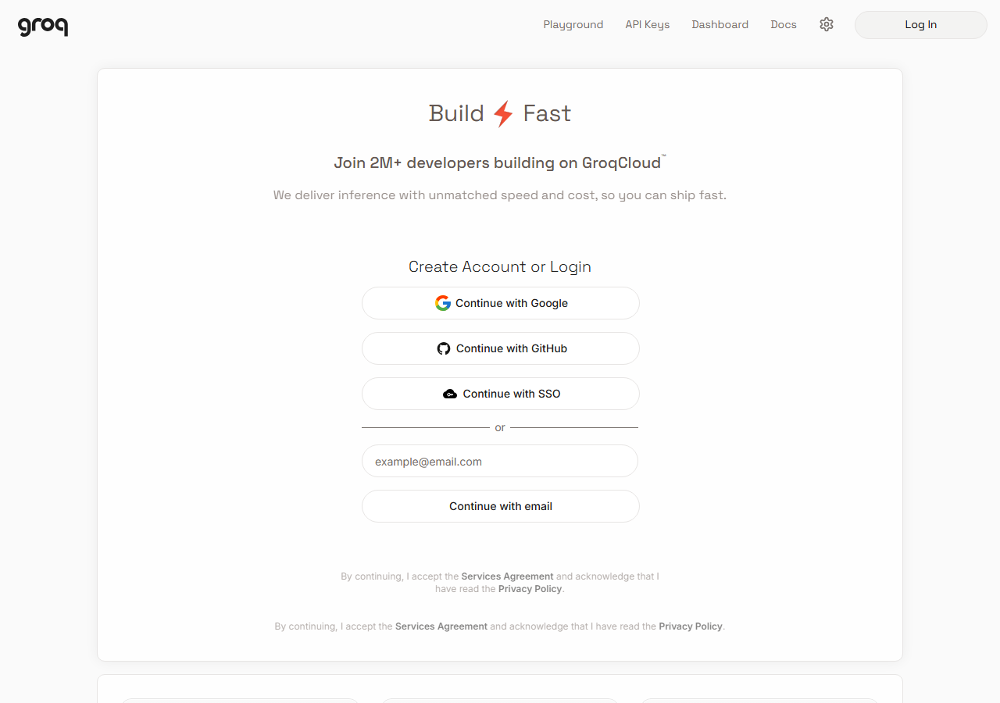
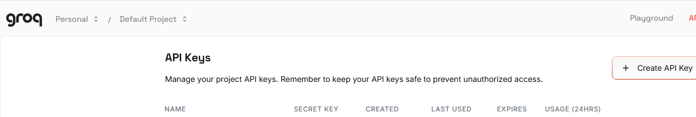
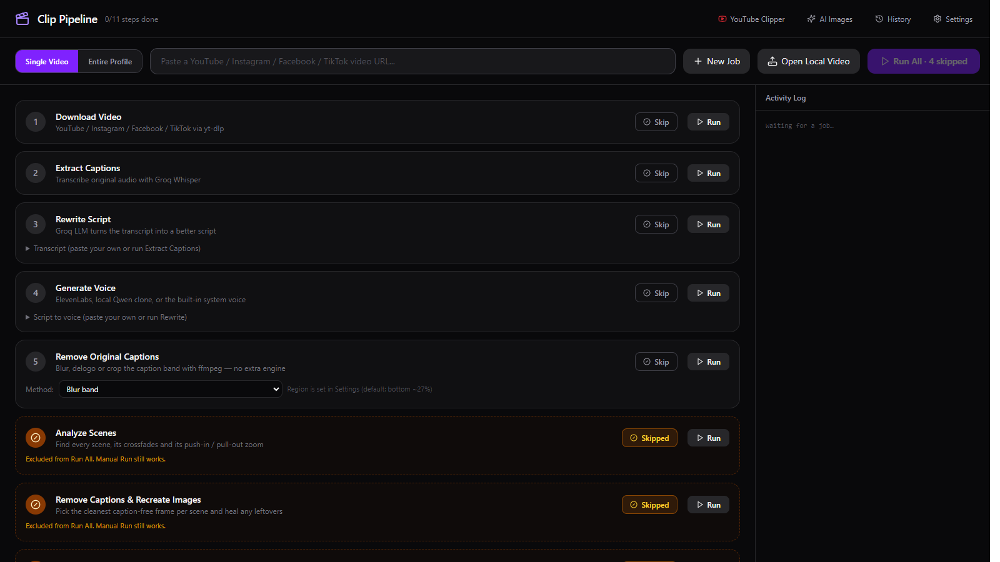
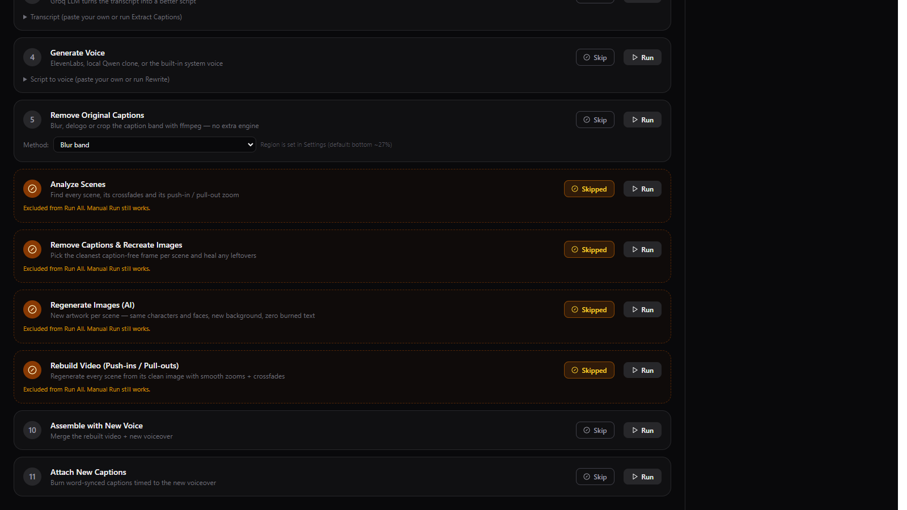
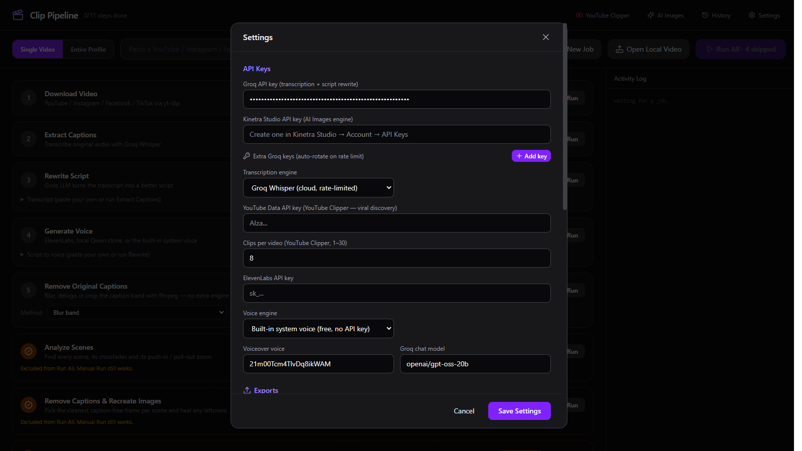
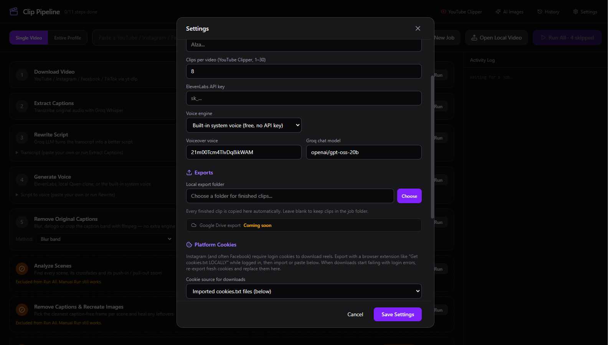
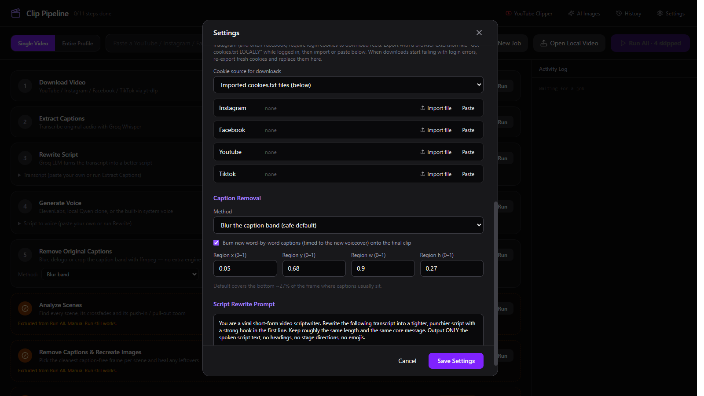
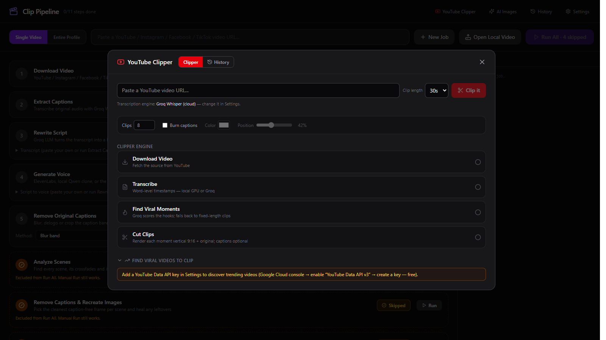
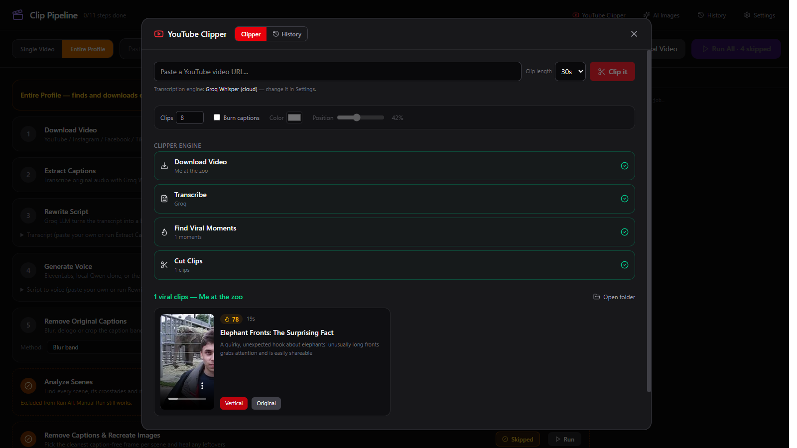

OneTime
OneTime1. Quick start
Windows: run the installer and follow the wizard. macOS: open the DMG, drag Clip Pipeline to Applications, then right-click → Open the first time (the build is unsigned).
The installer is self-contained: ffmpeg, Node, yt-dlp, and a portable faster-whisper engine are inside. You do not need Python, ffmpeg, or Node installed separately.
- Install and launch. A new job is created automatically.
- Get a free Groq API key. The full workflow needs one for script rewriting and AI moment scoring. Groq setup → Skip it only if you want the no-AI fallbacks.
- Paste a video URL, or click Open Local Video to work on a file you already have.
- Click Run All for the full pipeline, or run individual steps. Steps you do not want can be skipped.
- Find the result in the job folder, or in the local export folder you choose in Settings.
Get a free Groq API key Start here
The full workflow needs a free Groq API key. Script rewriting and YouTube Clipper’s AI viral-moment scoring both use Groq. Without a key, Clip Pipeline falls back to local Whisper, the transcript as the script, the built-in system voice, and fixed-length clips — usable, but not the full intended workflow.
1. Create an account
Open console.groq.com. Click Continue with Google, Continue with GitHub, Continue with SSO, or enter your email and click Continue with email. Complete the verification step.

2. Open the API Keys page
After signing in, open console.groq.com/keys, or choose API Keys in the top navigation.

3. Create the key
- Click Create API Key.
- Set Display Name to
Clip Pipeline. - Leave Expiration at No expiration, or choose a rotation period you prefer.
- Click Create. Copy the
gsk_…key immediately — Groq shows it only once.
4. Paste it into Clip Pipeline
Open Clip Pipeline → Settings → Groq API key, paste the key, then click Save Settings. The field is at the top of Settings; see the API keys section. If you have more than one free key, add the extras under Extra Groq keys for automatic rotation.
With the key in place, Rewrite Script and Find Viral Moments work. If you hit a rate limit, add another free key; the pipeline rotates to it automatically.
2. The main window

| Control | What it does |
|---|---|
| Single Video | Paste one video URL (YouTube, Instagram, Facebook, TikTok) and run the pipeline on it. |
| Entire Profile | Paste a creator profile or page URL to scan and bulk-download everything, then process the batch. |
| New Job | Starts a clean job folder. The current job stays in History. |
| Open Local Video | Uses a video already on your disk and skips Download Video. |
| Run All | Runs every enabled step in order. The label shows how many steps are skipped. |
| Activity Log | Live output from downloads, transcription, rendering and every other step. |
| Header links | YouTube Clipper, AI Images, History and Settings. |
3. The pipeline

| Step | What it does | Needs |
|---|---|---|
| 1. Download Video | Downloads the source, merges video + audio, saves source.mp4. | Bundled yt-dlp + Node |
| 2. Extract Captions | Transcribes the original audio with word timestamps. | Groq key or local Whisper |
| 3. Rewrite Script | Rewrites the transcript into a tighter short-form script. | Groq key; otherwise the transcript is used |
| 4. Generate Voice | Speaks the script with ElevenLabs, a local Qwen voice, or the built-in system voice. | ElevenLabs key, Qwen engine, or nothing |
| 5. Remove Original Captions | Blurs, delogos or crops the caption band using ffmpeg. | Bundled ffmpeg only |
| 6. Analyze Scenes | Finds scenes, crossfades and zoom moves. | Optional VSR engine |
| 7. Remove Captions & Recreate Images | Rebuilds clean scene backgrounds and saves stills. | Optional VSR engine |
| 8. Regenerate Images (AI) | Creates new artwork per scene. | Optional ComfyUI engine |
| 9. Rebuild Video | Rebuilds the video from clean images with push-ins and crossfades. | Optional VSR engine |
| 10. Assemble with New Voice | Merges the clean video and the new voiceover, retiming if needed. | Bundled ffmpeg |
| 11. Attach New Captions | Burns word-synced captions onto the final clip. | Groq timestamps or local Whisper |
Transcript and Script boxes let you paste your own text. Paste a transcript and skip Extract Captions; paste a script and skip Rewrite Script; or skip Rewrite with a transcript present and the transcript becomes the spoken script.
4. Settings
Open Settings from the header. Everything below is stored in the app settings file and applies to the next job.
API keys and engines

| Setting | What it does |
|---|---|
| Groq API key | Required for the full workflow: script rewriting and YouTube Clipper AI moment scoring. Also used for Groq Whisper transcription if selected. Free tier available. Without it, the app uses local Whisper, transcript-as-script, and fixed-length clips. |
| Kinetra Studio API key | Reserved for the AI Images engine. Kinetra key creation lives in Kinetra Studio → Account → API Keys. |
| Extra Groq keys | A pool of keys; the pipeline rotates to the next key when one is rate-limited. |
| Transcription engine | Groq Whisper (cloud, rate-limited) or faster-whisper (local) using the bundled engine. |
| Local Whisper model | tiny (~75 MB), small (~466 MB, default), medium (~1.5 GB), large-v3 (~3 GB). Downloads once and is cached. |
| YouTube Data API key | Only for YouTube Clipper’s “Find viral videos to clip” discovery. Clipping a pasted URL does not need it. |
| Clips per video | 1–30 clips in the YouTube Clipper. The same control is in the Clipper panel. |
| ElevenLabs API key | Cloud voiceover. Optional; the built-in system voice is free. |
| Voice engine | ElevenLabs, Qwen3-TTS (local GPU clone), or Built-in system voice (free, no key). |
| Voiceover voice | The ElevenLabs voice ID. The list loads from your account when a key is set. |
| Groq chat model | Model used for rewriting and moment scoring. Defaults to a current model; the clipper also tries fallback models. |
Exports

Choose opens a folder picker. Open opens the current folder. Leave it blank to keep clips only in the job folder. The folder is created if it does not exist.
Caption removal

| Setting | What it does |
|---|---|
| Blur the caption band | Fast ffmpeg box blur. Safe default for most clips. |
| Delogo region | ffmpeg interpolation over the caption area. Best on simple backgrounds. |
| Crop the caption band off | Removes the band entirely; changes the output aspect ratio. |
| Rebuild / Still Clipper / GPU MAX / GPU inpaint / AI inpaint | Optional heavier engines. These require the VSR/torch or OpenCV setup and are not bundled; leave the step skipped if you have not installed them. |
| Burn new captions | Burns word-by-word captions timed to the new voiceover onto the final clip. |
| Region x / y / w / h | Caption band as fractions of the frame (0–1). Default covers the bottom ~27% where captions usually sit. |
| Script Rewrite Prompt | The system prompt used by Rewrite Script. Edit it to change tone, length or format. |
5. YouTube Clipper

| Control | What it does |
|---|---|
| Video URL | The YouTube video to clip. The title is fetched without an API key. |
| Clip length | 15s, 30s or 60s. AI moments are clamped to this length; the fixed fallback uses it exactly. |
| Clips | 1–30. The AI is asked for this many moments; remaining slots are filled with fixed clips if it returns fewer. |
| Burn captions | On: word captions are burned into both outputs. Off: clean exports with no captions. |
| Colour | Caption text colour. The default is white; the outline stays dark for legibility. |
| Position | Vertical caption position from 10% to 90% of the frame. Default 42%. |
| Clip it | Runs download → transcribe → find moments → cut clips. |
The clipper engine shows four stages: Download Video, Transcribe, Find Viral Moments, and Cut Clips. Qwen is tried first for moment scoring; other models are fallbacks. If AI finds nothing, it cuts fixed-length clips rather than failing.

Find viral videos to clip (collapsible at the bottom) needs a YouTube Data API key. It is optional; pasting a URL works without it.
6. No-AI workflow
Clip Pipeline has a no-AI fallback path: the bundled local Whisper engine and the built-in system voice cover transcription and voiceover. These are fallbacks, not the full workflow — for script rewriting and AI viral-moment scoring, add the free Groq API key.
- Transcription: with no Groq key, Extract Captions switches to local Whisper automatically. Download the model once; later runs use the cache.
- Script: Rewrite Script falls back to the transcript when no Groq key is set. You can also paste your own script and skip Rewrite.
- Voice: choose Built-in system voice in Settings. No key, no account; the OS voice speaks the script.
- Captions: Attach New Captions uses local Whisper word timestamps when Groq is unavailable.
- YouTube Clipper: no Groq key means fixed-length clip selection. No YouTube API key means use a pasted URL instead of discovery.
- Caption removal: step 5 uses ffmpeg blur/delogo/crop. No VSR or ComfyUI needed.
7. Files and troubleshooting
Where files live
| Item | Location |
|---|---|
| Jobs | Videos/ClipPipeline (Windows) or Movies/ClipPipeline (macOS) |
| Settings | %APPDATA%\clip-pipeline\settings.json (Windows) or ~/Library/Application Support/clip-pipeline/settings.json (macOS) |
| Exports | The folder chosen in Settings → Exports |
| API keys | In the settings file, in plain text. Treat the file as sensitive. |
Common issues
| Symptom | Fix |
|---|---|
| App still shows an old build | Close every Clip Pipeline window and relaunch. A running window keeps the old code until restarted. |
| Local transcription is slow the first time | The model downloads once. Use tiny or small for speed; watch the Activity Log for progress. |
| YouTube download fails (403) | Use the Update downloader banner when it appears; the app checks yt-dlp on launch. For logged-in videos, import cookies. |
Groq model_not_found | The configured model was retired. The app migrates to a current default; moment scoring also tries fallback models. |
Groq json_validate_failed | The model returned malformed JSON. The clipper retries and falls back to fixed-length clips. |
| Rebuild or AI Images fails | Those steps need VSR/ComfyUI, which are not bundled. Leave them skipped, or point CLIP_PIPELINE_VSR_DIR / CLIP_PIPELINE_COMFY_DIR at your installs. |
| macOS says the app is damaged | The build is unsigned. Right-click the app → Open the first time; if needed, remove the quarantine flag in Finder. |